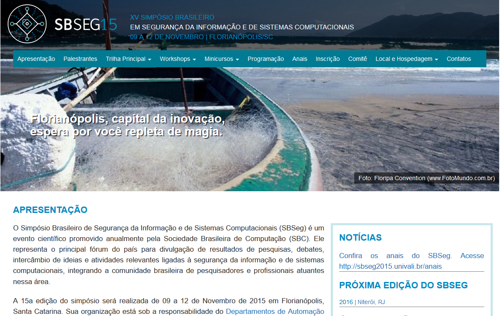

O Simpósio Brasileiro de Segurança da Informação e de Sistemas Computacionais (SBSeg) é um evento científico promovido anualmente pela Sociedade Brasileira de Computação (SBC). Ele representa o principal fórum do país para divulgação de resultados de pesquisas, debates, intercâmbio de ideias e atividades relevantes ligadas à segurança da informação e de sistemas computacionais, integrando a comunidade brasileira de pesquisadores e profissionais atuantes nessa área.
O PoP-SC apoiou o evento provendo conectividade.
Maiores informações em: SBSEG-2015
